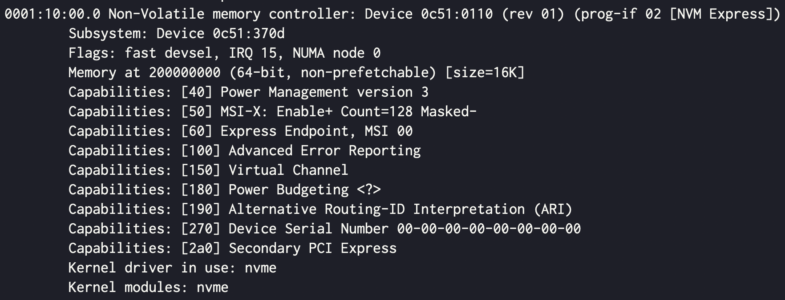

참고한 것들
OS <-> Device “Controller” communication
- MMIO 는 device 의 address space 를 host 의 physical memory space 와 kernel (혹은 device driver) 의 virtual memory address 에 매핑하는 것이다.
- 이렇게 매핑한 이후에는 virtual address 에 접근하는 방식으로 device controller 의 address 에 접근하게 된다.
- 즉, 이렇게 함으로써 kernel 과 device controller 간의 high-level 통신 채널이 생기는 것.
원리
이후의 내용 + 용어는 PCIe 기반입니당.
Initiate
- 컴퓨터의 전원이 들어오면, 부팅 과정에서 BIOS (혹은 OS) 가 부착되어 있는 PCI 장비들을 검색한다.
- 이때 PCI 장비는 BAR 레지스터에 host 의 원하는 physical memory size 를 명시하여 BIOS (혹은 OS) 에게 요청한다.
- 보통은 그냥 전부
1로 채워 얼만큼 매핑할지도 BIOS (혹은 OS) 가 결정하게 한다고 한다.
- 보통은 그냥 전부
- 그럼 BIOS (혹은 OS) 는 매핑할 physical memory space 를 선정한 후, 이곳의 시작 주소를 BAR 에 채워넣는다.
- 그럼 이제 BAR 에는 mapping 될 physical memory space 의 (1) 시작주소와 (2) 크기가 저장되는 셈이다.
- 이후에 OS 는 이 BAR 에 저장된 physical memory address 를 이용해 kernel 혹은 device driver 의 virtual memory space 에 매핑한다.
눈으로 확인해보기
- 이렇게 해서 매핑된 MMIO 영역은
lspci명령어로 확인할 수 있다.
sudo lspci -v
- 저기
Memory at ...부분이 그거임
Access
CPU CPU Bus
Virtual Physical Address
Address Address Space
Space Space
+-------+ +------+ +------+
| | |MMIO | Offset | |
| | Virtual |Space | applied | |
C +-------+ --------> B +------+ ----------> +------+ A
| | mapping | | by host | |
+-----+ | | (MMU) | | bridge | | +--------+
| | | | +------+ | | | |
| CPU | | | | RAM | | | | Device |
| | | | | | | | | |
+-----+ +-------+ +------+ +------+ +--------+
- 어떤 device driver 가 virtual memory address 로 MMIO 에 접근하려 한다고 해보자.
- 그럼 일단 이 주소는 MMU 에 의해 physical memory address 로 바뀔 것이다.
- 그리고 이 주소는 PCI controller 에 의해 bus address 로 바뀐다.
- 저 bus virtual address 는 IO address 혹은 device virtual address 라고도 불리고, device 내부적인 주소 체계라고 이해하면 된다.
- 바꾸는 과정을 좀 더 구체적으로 설명하면,
- PCI controller 는 BAR 를 읽어 base physical memory address 를 알아낸다.
- 그리고 requested physical address 에 저 값을 빼면 offset 이 나올 테고, 그것이 bus address 인 것.
C API
ioremap()
- 일단 기본적으로
ioremap()함수는 MMIO 된 physical space 의 시작 주소에 대해 page table entry 를 만들어 virtual address 를 반환해 준다.
memremap()
void *memremap(resource_size_t offset, size_t size, unsigned long flags);- 근데 ioremap() 은 좀 문제가 있다고 한다.
- 가령 device memory 에 접근할 때 caching 을 하는 것이 좋을 때도 있고 안좋을 때도 있는데 (x86 기준) caching 을 무조건 비활성화 하는 등.
- 따라서 좀 더 좋은 wrapper 함수가 공개되었는데, 그것이
memremap()이다.- ioremap() 과 기능은 동일하다; physical address 를 받아서 그에 맞는 virtual address 를 생성하여 반환한다.
__iomem annotation
- ioremap() 이나 memremap() 이 반환해준 주소는 device 를 참조하기 떄문에 바로 dereference 하는 것은 별로 좋지 않다고 한다.
- 따라서 이것을 dereference 할 때는
ioread32()와 같은 함수를 통하는 것이 안전한데, - 이것을 강제하기 위한 annotation 이 바로 저
__iomem이다.- 이건 Sparse 라는 sementic checker 를 위한 것으로, 저 annotation 을 넣지 않은 상태로 주소를 담을 변수를 선언한 뒤 sparse 를 돌리면 경고가 뜬다.
- 즉, 아래의 두 경우는 잘못된 사용법이다.
void *io = ioremap(42, 4);u32 __iomem* io = ioremap(42, 4);
pr_info("%x\n", *io);- 이렇게 해야 맞다는 것.
void __iomem* io = ioremap(42, 4);
pr_info("%x\n", ioread32(io));